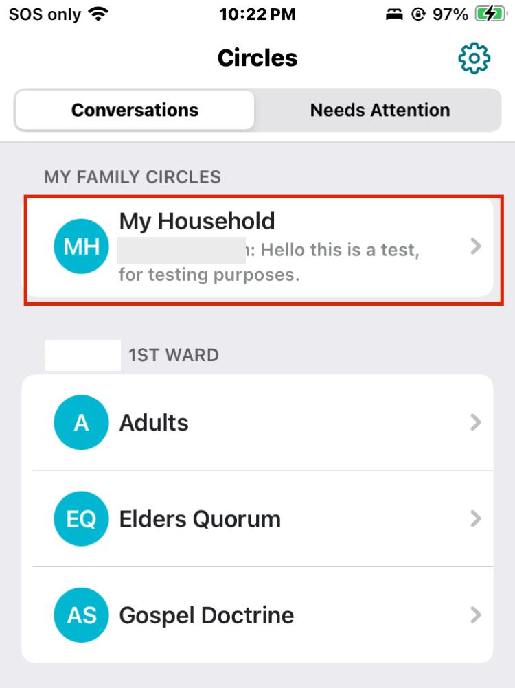

Navigating the main screen
- Conversations that you are apart of will appear under the Conversations tab such as quorums, classes and certain callings.
- The Needs Attention tab alerts you to any urgent Circle messages that require your attention.
Inside a Specific Conversation
Within a conversation, you'll see the group name (e.g., 'My Household'), your ward/branch name, chat history, shared history of goals and activities, and an option at the bottom to share a message or photo.
To see members of a Conversation, tap the person icon in the top-right corner. You can find specific contact information for individuals in this menu.
To easily view all planned activities, goals, thoughts, and shared media, select the list icon, also located in the top-right corner.
Muting notifications for one group
- Start by Selecting the group you'd like to disable notifications. 
- Select the list icon in the top corner.
- Select the bell icon. A slash will appear indicating notifications have been disabled.
So, why use Circles and not another messaging app?
- Circles is automatically organized based on church records so it is easy to message everyone as long as they have the app and have signed in.
- You can easily avoid violating any handbook guidelines (e.g. privately messaging a youth) because these restrictions are built into the app.
- You can avoid any cross platform friction that some phones introduce when trying to make group chats.
- Planning activities and sharing goals are built right into the messenger making it easy for everyone to see.